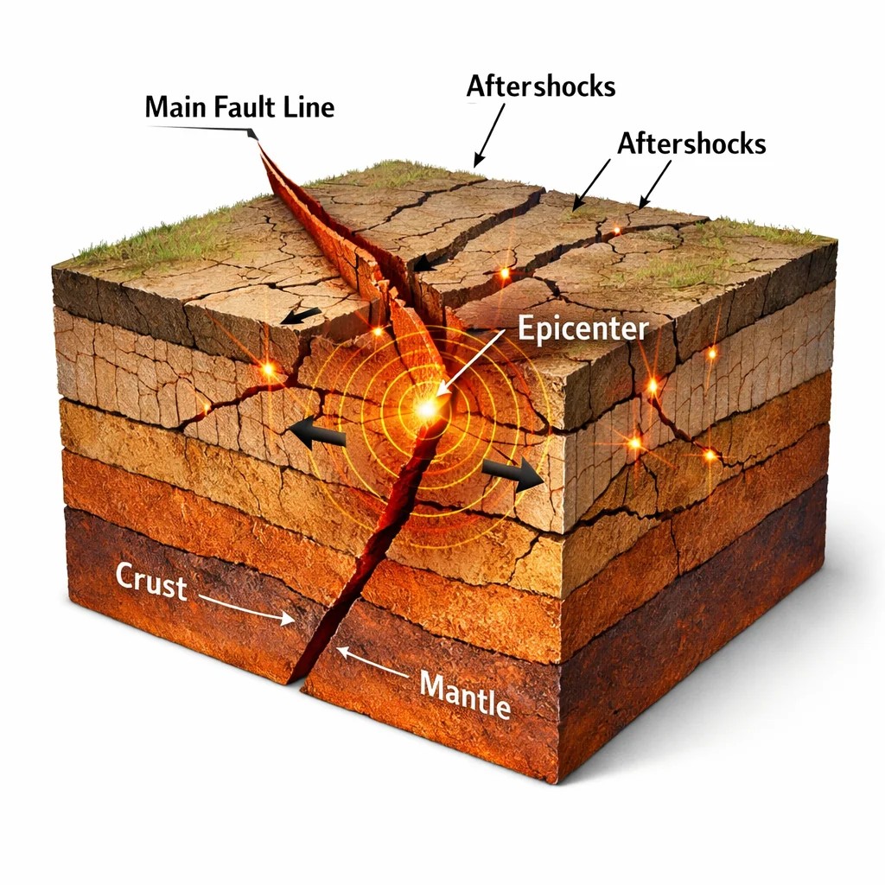

Artçı Deprem Nedir? Ne Kadar Sürer, Zararı Olur mu?
Büyük bir deprem sonrası birçok daha küçük sarsıntı hissederiz. Bunlar rastgele değil — bilimsel olarak "artçı deprem" denilen jeolojik bir süreçtir. Peki artçılar ne kadar sürer ve ne kadar tehlikeli?
Artçı Deprem Nasıl Oluşur?
Ana deprem sırasında fay hattı boyunca büyük bir yer değiştirme olur. Ancak fay üzerindeki gerilim tek seferde tamamen boşalmaz — küçük bölgelerde gerilim kalır. Bu bölgelerdeki kırılmalar artçılardır. Her ana deprem, kendi artçı dizisini üretir — bu "Omori yasası" olarak bilinen bilimsel bir kuralla açıklanır.
Artçılar Ne Kadar Sürer?
Omori yasasına göre artçı sayısı ana depremden sonra üssel olarak azalır. Pratik olarak:
İlk 24 saat: onlarca artçı (yüzlerce küçük), büyüklük ana depremin 1 derece altında olabilir.
İlk hafta: artçı sayısı günlük olarak azalır.
İlk ay: önemli artçılar devam eder.
6 ay – 2 yıl: aralıklı artçılar. 2023 Kahramanmaraş depremlerinin artçıları 2 yıl sonra bile devam ediyor.
Artçıların Büyüklüğü
Kural olarak en büyük artçı, ana depremin 1 büyüklük altındadır (Båth yasası). Yani Mw 7.5 bir ana depremden sonra en büyük artçı yaklaşık Mw 6.5 olur. Ancak çok nadiren artçı, ana depremden daha büyük olabilir — bu durumda terminoloji değişir: ilk sarsıntı "öncü", sonraki "ana" olur. 2023'te 6 Şubat sabah 04:17'deki Mw 7.8 depremden sonra aynı gün öğlen Mw 7.6 ile ikinci bir ana deprem geldi — nadir bir örnektir.
Artçılar Neden Tehlikeli?
Artçılar kendileri genelde yıkıcı değildir ama zaten hasarlı binaları yıkabilir. Bir Mw 7.0 ana depremden sonra gelen Mw 5.5 artçı, ana depremde hasar alan 100-200 binayı yere serer. Bu yüzden deprem uzmanları "artçı biten kadar binaya girmeyin" uyarısı yapar.
Artçılardan Nasıl Korunulur?
1. Ana deprem bittikten sonra 72 saat boyunca güvenli açık alanda kalın. 2. Şehrinizin deprem aktivite takibini canlı yapın. 3. Hasarlı binalara kesinlikle girmeyin. 4. Artçılar sırasında çök-kapan-tutun pozisyonuna geçin. 5. Gaz, elektrik ve suyu kapalı tutun — artçı sırasında patlama riski yüksek.